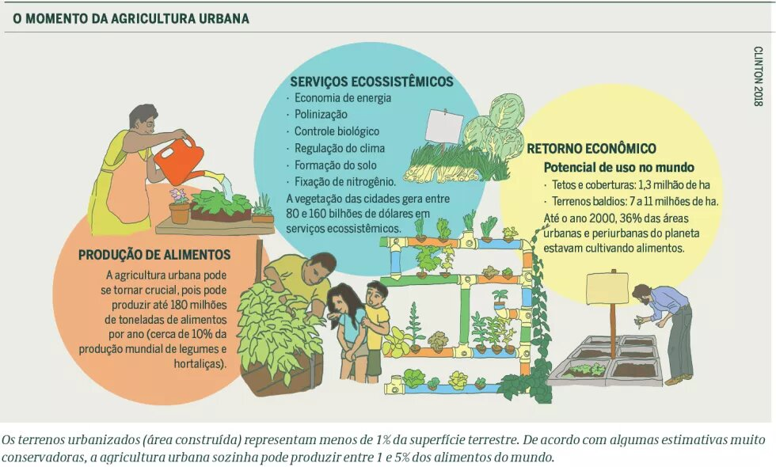

A importancia da conjução da agrivultura com a cidade
Qual a importcia dessa conjunção ?
A conjunção da agricultura com as cidades, através da agricultura urbana e periurbana, é fundamental para a segurança alimentar, geração de emprego, saúde e sustentabilidade das áreas urbanas. A produção de alimentos locais reduz a dependência de longos transportes e embalagens, além de oferecer alimentos mais frescos e saudáveis.
Beneficios da conjunção da agricultura e da cidades:
- Segurança alimentar;
- Saúde;
- Biodiversidade;
- Geração de emprego e renda;
- Sustentabilidade;
- Conservação da biodiversidade;
- Educação e interação;
- Redução de custos.

Segurança alimentar
A produção local de alimentos garante acesso a produtos frescos e saudáveis, reduzindo a dependência de sistemas de distribuição complexos e longos, que podem levar a perdas e deterioração.
Saúde
A agricultura urbana promove a alimentação adequada e saudável, contribui para a prevenção de doenças e melhora a qualidade de vida dos moradores.
Biodiversidade
A agricultura urbana aumenta a biodiversidade local, contribuindo para a preservação de espécies nativas e para a revitalização de espaços verdes.
Geração de emprego e renda
A agricultura urbana gera oportunidades de emprego e renda, especialmente para famílias de baixa renda, e pode ser uma alternativa de sustento para comunidades rurais.
Sustentabilidade
A produção local de alimentos reduz o desperdício, uma vez que os produtos não precisam ser transportados de longas distâncias e diminuem a necessidade de embalagens, contribuindo para a sustentabilidade ambiental.